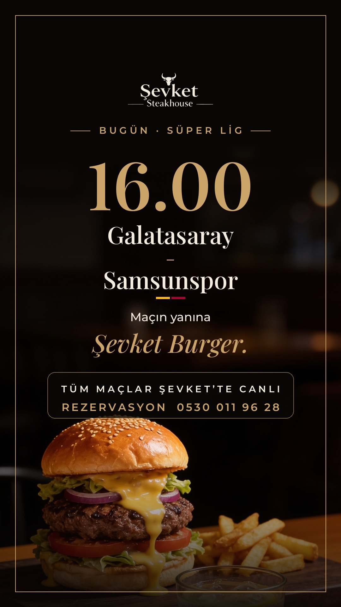
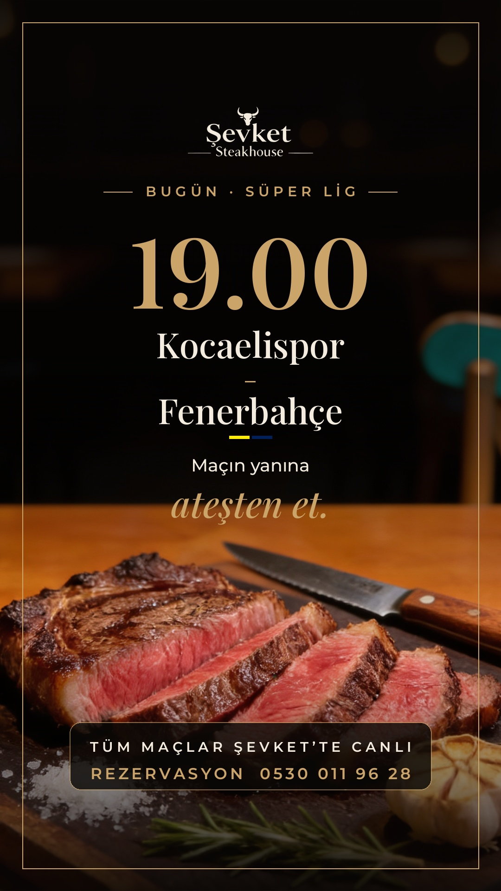

Örnek çalışma · Detay Multimedya
Bugünün maçları için hikâyeler
21 Kasım Cumartesi, Süper Lig 12. hafta. Galatasaray maçı için Şevket Burger, Fenerbahçe maçı için ızgara et.
Galatasaray – Samsunspor


Hikâyeye eklenecek etiket
Maç 16.00’da, burger hazır. 🍔 #ŞevketSteakhouse #Çanakkale
Kocaelispor – Fenerbahçe


Hikâyeye eklenecek etiket
Akşam 19.00’da maç da et de ateşte. 🔥 #ŞevketSteakhouse #Çanakkale
Paylaşırken Instagram’ın “Konum” etiketiyle Şevk-Et Steakhouse’u ve maç saatine geri sayım çıkartmasını eklemenizi öneririz.